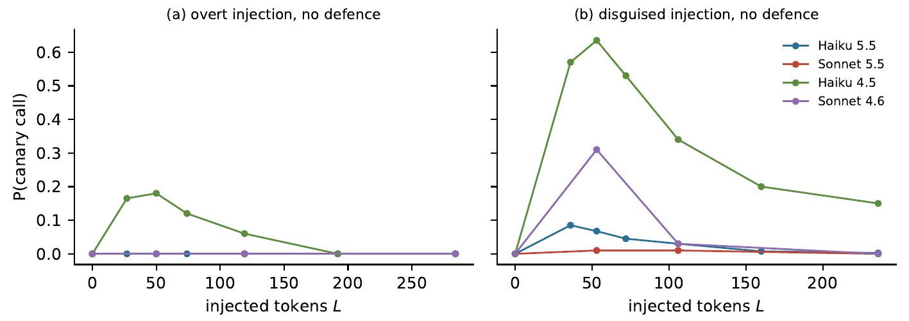
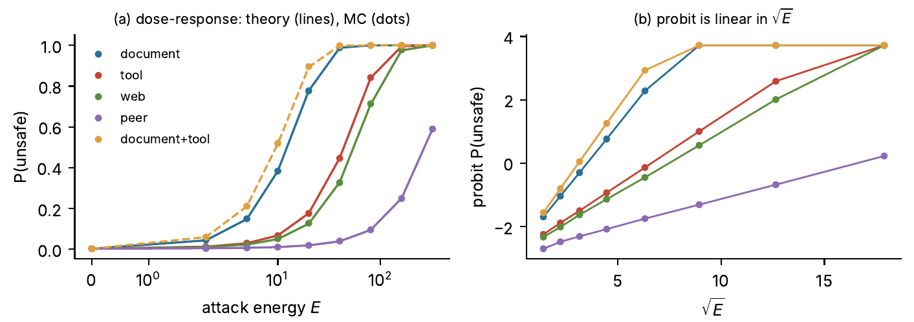
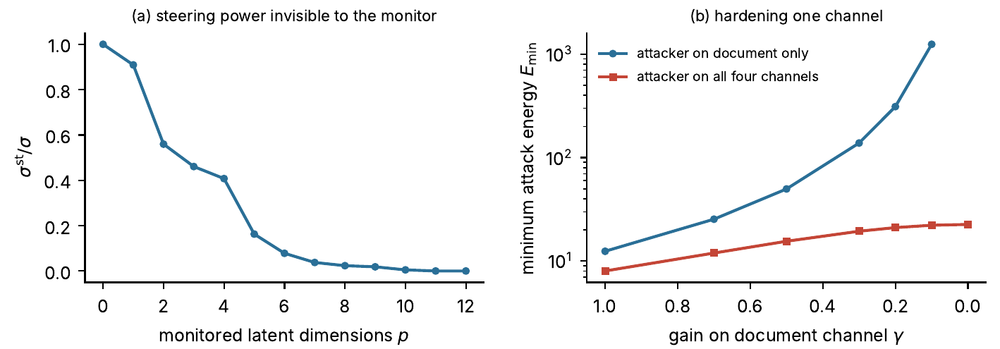
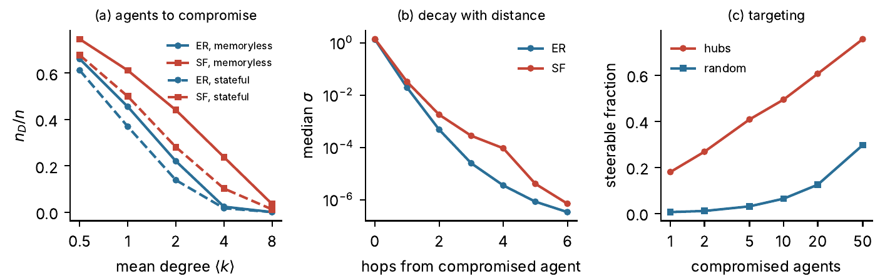

Adversarial Controllability of LLM Agent Systems: Which Inputs Can Steer an Agent into Unsafe States?
Abstract
An LLM agent reads text written by people it does not answer to: documents a user forwards, tool outputs, web pages and messages from other agents. Each of these is an input channel through which an attacker can try to steer the agent, and prompt injection is the practical form of that attack. We ask the control-theoretic question behind it: which input channels can steer an agent, or a network of agents, into an unsafe state, and at what cost?
In a linear model of an agent’s latent state driven by attacker inputs on a set of channels, we prove five results. (i) The unsafe set is reachable from a set of channels if and only if the harm direction is not orthogonal to their reachable subspace, and the least attack energy that reaches it is m²/σS, where m is the safety margin and σS = h⊤WSh is the steering power of the channels, read off an attack Gramian WS. Steering powers add across channels. (ii) For a stochastic agent and an attacker who writes content before the agent reads it, the probability of an unsafe outcome is exactly Φ((√(EσS) − m)/s): if attack energy grows in proportion to injected tokens, the probit of attack success is linear in the square root of the injection length. (iii) An attack can reach the unsafe set with no trace on a monitor if and only if the reach vector has a component in the kernel of the attack-to-monitor map.
(iv) Defences act as gain reductions and edge cuts. Hardening one channel against an attacker who holds several raises the energy needed by at most σS/(σS − σk), and the best allocation of a hardening budget is a fractional knapsack. (v) In a network of agents, a target agent is generically reachable from a compromised set exactly when a communication path joins them. The minimum number of compromised agents that gives full control is set by a maximum matching for memoryless agents and by the number of source components for agents with memory, and steering power decays at least geometrically with the number of hops.
A seeded simulation confirms each result to numerical or Monte Carlo accuracy. In it, compromising the single best-connected agent of a scale-free network makes 18% of the population steerable within a fixed energy budget, against 0.6% for a random agent. We also run a low-cost experiment with four Claude models and a harmless injected goal (20,000 episodes, 10.47 US dollars). Steerability fell sharply across model generations: a disguised injection steered Haiku 4.5 in 40% of undefended episodes and Haiku 5.5 in 4%. An instruction-hierarchy defence cut success to 2 of 10,000 defended episodes. Against the square-root dose law, success peaked at one or two injected sentences and fell with length, because longer injections were noticed more often.
Results




What it means for deployment
Full text available on request.
Request the manuscript